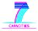

Centre National de la Recherche Scientifique

The Linear Accelerator Laboratory (LAL) is located in Orsay, France just south of Paris and is support.htmled by CNRS, IN2P3, and the Université Paris-Sud XI. Since 2001, the Service Informatique at LAL has participated in major grid projects and operates a large site within the EGEE production grid infrastructure. (The LAL grid resources are part of GRIF–a collaboration between six institutes in the Ile de France.)
The Institute for the Biology and Chemistry of Proteins (IBCP) is located in Lyon, France and is support.htmled by CNRS, INSB, and the Université de Lyon. Since 2001, IBCP is working in the usage of distributed infrastructures for bioinformatics applications. We have participated to major IT and Bioinformatics projects related to the field and are operating bioinformatics resources in grid and Web services for the national and european communities. Since 2007, IBCP is leading the French Bioinformatics Grid infrastructure RENABI GRISBI (Grid, Support to Bioinformatics, www.grisbio.fr, building a distributed and cooperative bioinformatics platform at the national scale.
Contact: Cal Loomis


The StratusLab project is co-funded by the European Community's Seventh Framework Programme (Capacities) Grant Agreement INFSO-RI-261552.